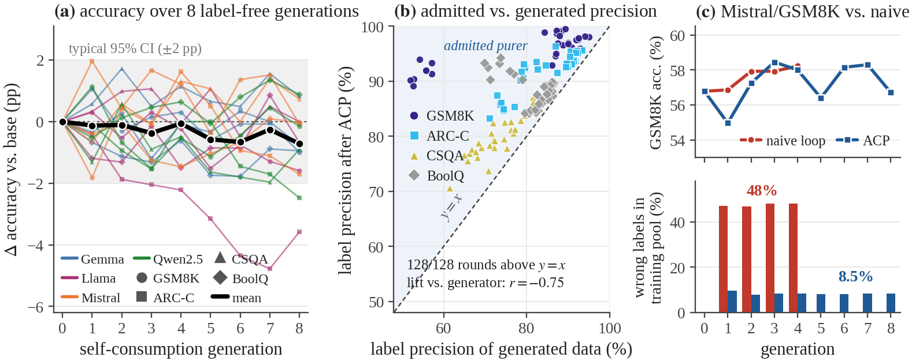
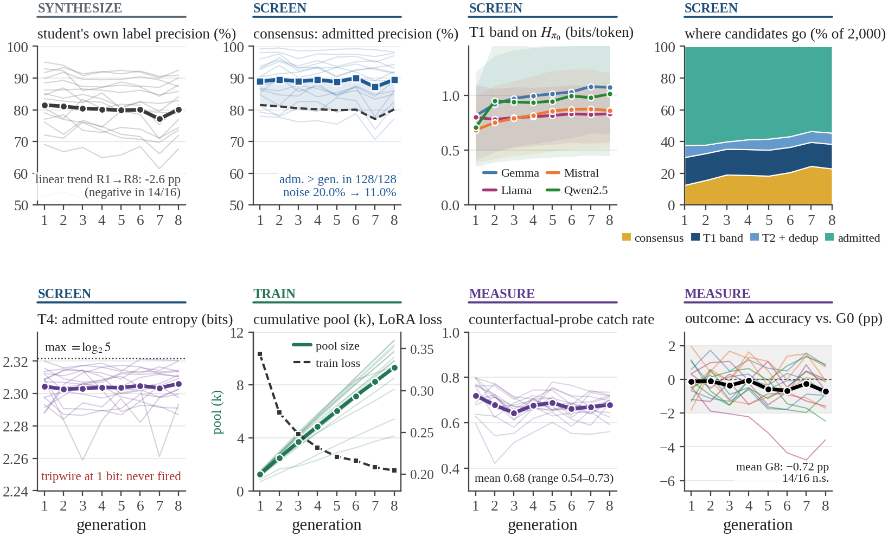
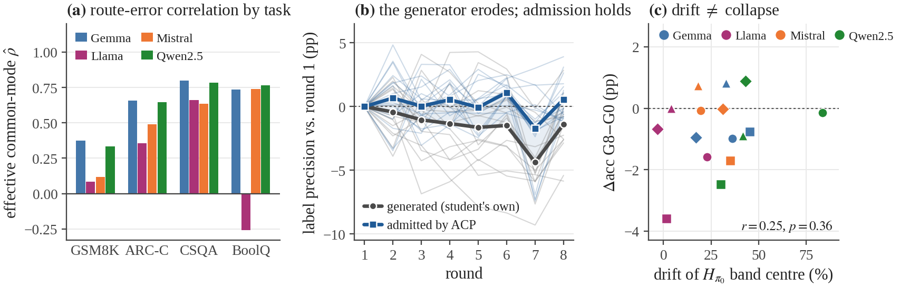
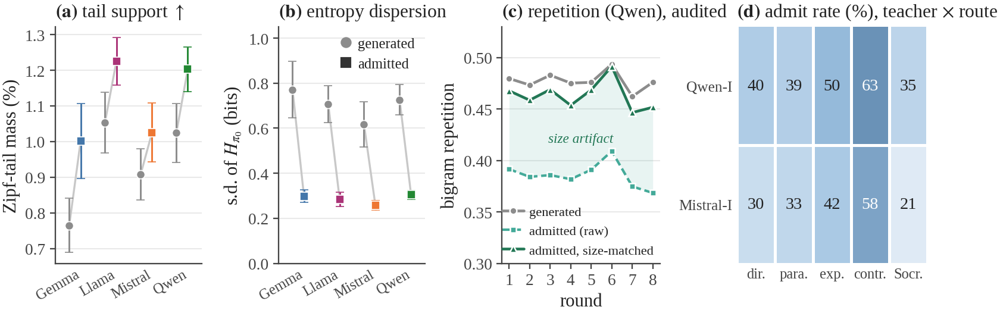

TL;DR Model collapse is a property of the admitted training distribution, not of who wrote the data. The Anti-Collapse Protocol (ACP) screens a model's own synthetic data using cross-route consensus plus four information-geometry gates, with no gold labels and no "AI vs. human" detector. That keeps recursive self-training stable for eight generations.
14 / 16
settings with accuracy within noise after 8 generations
128 / 128
rounds where admitted labels beat generated labels
20.0→11.0%
label noise in the training pool
48% vs 8.5%
wrong labels: naive loop vs. ACP, at equal accuracy
Abstract
High-quality human text is becoming a finite bottleneck for scaling language-model training, which pushes the field toward synthetic data. Yet naïve recursive self-feeding induces model collapse: rare tokens disappear, outputs converge to a stylistic monoculture, label noise compounds, and rare knowledge decays first.
We propose the Anti-Collapse Protocol (ACP), a provenance-agnostic, label-free recipe for repeated synthetic fine-tuning that preserves heterozygosity without detecting "AI vs. human." ACP couples a label-free consensus gate, which admits an answer only when independent reasoning routes agree, with four information-geometry gates: (T1) Entropy Banding, (T2) Tail-Mass & Novelty Floors, (T3) Domain Isotropy, and (T4) Red-Queen Critics over a route lattice. It runs as a closed loop with tripwires.
In a fully self-consuming loop (four model families × four benchmarks × eight generations, zero gold labels), accuracy stays within noise of the base model in 14 of 16 settings (mean −0.72 pp; none significant after correction). Admitted-label precision exceeds generated precision in all 128 rounds, and the gains are largest where the generator is weakest (r = −0.75). An unfiltered loop matches ACP's accuracy while training on 48% wrong labels: accuracy is a lagging indicator of collapse. On open web text, ACP raises rare-token mass by 13–31% while retaining ≥97.6% of teacher–route diversity.
The protocol
ACP treats recursive fine-tuning as a closed-loop data-admission problem. A generator answers each prompt along K = 5 reasoning routes (direct, paraphrase-first, step-by-step, contrastive, Socratic). ACP admits the largest candidate set that satisfies every gate:
AdaptTripwires rotate critics when admit < 5%, Hroute < 1 bit, or repetition > 0.40
↺ closed loop: generation w → w+1
Consensus
correctness
Admit only when ≥ m of K routes share the unique modal answer (3 of 5). Open text: an embedding cluster spanning ≥ 2 routes.
T1 · Entropy Banding
learnability
Keep samples whose surprisal under the frozen base lies in a quantile band, dropping both rote text and noise. The band centre doubles as a drift meter.
T2 · Tail & Novelty
support
Floors on Zipf-tail mass, new 3-grams and distinct tokens, plus an embedding dedup cap to block paraphrastic clones.
T3 · Domain Isotropy
coverage
KL cap between the admitted topic histogram and the seed-cluster prior prevents topical lock-in.
T4 · Red-Queen Critics
mechanisms
Route caps, route-entropy tracking, rotating critics that vote against sameness, and counterfactual probes.
Results
Regime I (self-consuming). Gemma-2-9B, Llama-3.1-8B, Mistral-7B and Qwen2.5-7B each generate their own training data for GSM8K, ARC-Challenge, CommonsenseQA and BoolQ. Each generation answers 400 fresh questions × 5 routes; ACP filters, the student is LoRA-tuned on the cumulative pool, and this repeats 8 times. Gold labels are used only for evaluation.

Eight generations of label-free self-consumption. (a) Accuracy change vs. the base model for 16 model–task settings. (b) Label precision of admitted vs. generated data: every one of the 128 rounds lies above y = x, and the lift grows as the generator weakens. (c) Against an unfiltered loop (Mistral/GSM8K) accuracy is indistinguishable, but 48% of the naive pool is mislabelled versus 8.5% under ACP.
Collapse shows up before headline accuracy fails
The student's own output precision trends downward in 14 of 16 settings (mean −2.6 pp, up to −7.7 pp). Accuracy barely moves: mean change −0.72 pp, and no setting is significant after Bonferroni correction. ACP absorbs about 83% of the generator's erosion before it reaches the training pool.
Accuracy is a lagging indicator
After four generations the naive loop scores 58.2% on GSM8K versus 58.0% for ACP. Judged on accuracy alone, filtering looks unnecessary, but the naive pool holds 3,849 mislabelled examples (48.1%) against ACP's 233 (8.5%). That is a 16.5× difference. A self-consuming loop can look healthy on its benchmark while half its training data is wrong.
Stability without collapsing diversity
Admitted routes stay near-uniform (route entropy 2.30 of a maximal 2.32 bits), counterfactual probes are caught at 0.54–0.73, and no tripwire fires in Regime I.

Recursive dynamics dashboard (Regime I, 16 settings × 8 generations). The student's own label precision erodes, while consensus keeps admitted precision flat and above it. The T1 band drifts upward, route entropy stays within 3% of maximum, the pool grows linearly, and accuracy stays near base.
Student
Task
G0
G4
G8
Δ8
p
gen. prec.
adm. prec.
noise ↓
admit
Gemma-2-9B
GSM8K
88.9
89.2
87.9
−1.0
.43
88.9
95.8
62%
26%
ARC-C
91.7
91.6
91.0
−0.8
.51
91.7
94.5
34%
59%
CSQA
79.0
80.1
79.8
+0.8
.62
75.7
80.1
18%
71%
BoolQ
88.1
87.5
87.2
−0.9
.24
85.9
89.1
22%
69%
Llama-3.1-8B
GSM8K
85.9
85.7
84.3
−1.6
.25
87.4
98.9
91%
53%
ARC-C
87.2
85.0
83.6
−3.6
.01
81.7
92.9
61%
61%
CSQA
77.4
77.3
77.4
+0.0
1.0
72.0
80.2
29%
66%
BoolQ
81.9
80.4
81.2
−0.7
.48
73.8
92.2
70%
48%
Mistral-7B
GSM8K
56.8
58.0
56.7
−0.1
.97
54.7
91.6
81%
34%
ARC-C
77.0
78.7
75.3
−1.7
.33
74.5
86.0
45%
58%
CSQA
70.5
71.8
71.3
+0.7
.69
66.5
76.3
29%
63%
BoolQ
83.5
82.0
83.5
−0.0
.97
82.6
86.1
20%
61%
Qwen2.5-7B
GSM8K
90.3
89.8
90.1
−0.2
.90
92.3
97.4
67%
59%
ARC-C
91.5
91.5
89.0
−2.5
.04
89.7
93.3
35%
66%
CSQA
82.2
81.7
81.3
−0.9
.56
80.2
84.2
20%
71%
BoolQ
84.3
85.0
85.2
+0.9
.32
83.2
86.3
18%
68%
Mean
82.3
82.2
81.6
−0.72
80.0
89.0
44%
58%
Accuracy (%) after 0, 4 and 8 self-consuming generations. p: two-sided two-proportion test of G8 vs. G0; none significant after Bonferroni correction (α = 0.05/16). Precisions averaged over 8 rounds; "noise ↓" is the relative reduction of mislabelled samples; "admit" is the share of 2,000 candidates admitted per round.
Why consensus works, and when it does not
Let K routes each be correct with probability p and spread wrong answers over L alternatives. If route answers are conditionally independent, the precision of m-of-K consensus satisfies
The lift grows as the generator weakens. Routes of one model are not independent, though: a knowledge gap affects every route. Modelling a common-mode fraction ρ of prompts and inverting at the observed precision gives a consistent ordering for every student: GSM8K (ρ̂ = 0.09–0.38) < ARC-C (0.36–0.66) < CSQA (0.64–0.80). Routes decorrelate reasoning errors but not knowledge errors, so the lever for further gains is decorrelating routes.

Mechanisms. (a) Route errors are least correlated on multi-step math and most correlated on knowledge-heavy tasks. (b) The student's own outputs erode; admitted data does not. (c) The T1 band drifts by −3 to +84% under self-consumption, yet drift is unrelated to accuracy change.
Distributional health on open web text
Regime II. Four backbones are QLoRA-tuned on FineWeb continuations from a two-teacher lattice (Qwen2.5-7B-I, Mistral-7B-I) × five routes, for 8 rounds.
Tail support is enriched: admitted text carries 1.13–1.31× the rare-token mass of the generated pool in 31 of 32 backbone-rounds.
The lattice stays plural: per-cell admission ranges from 21% to 63%, yet the admitted pool keeps 97.6–98.5% of maximal teacher–route entropy.
We audit our own metric: size-matching shows that 85% of the apparent repetition gain is an artifact of pool size. A genuine reduction of 0.014 remains, positive in 8 of 8 rounds.

Regime II: generated vs. admitted data, four backbones × 8 rounds. (a) +13–31% Zipf-tail mass. (b) Entropy-dispersion compression (by construction; a sanity check). (c) Most of the raw repetition gain disappears after size-matching. (d) Admission varies up to 3× across teacher × route cells, yet ≥ 97.6% of maximal joint entropy is retained.
Scope & limitations
ACP is a controlled anti-collapse protocol for recursive synthetic fine-tuning, not a proof that synthetic recursion is safe in general.
7–9B students with LoRA/QLoRA; frontier-scale pre-training is not studied.
Eight generations; longer chains may expose delayed tail erosion.
Some diagnostics are partly protocol-internal (e.g. entropy-dispersion compression follows from T1).
No threshold sweeps or per-gate ablations; the unfiltered baseline covers one model–task pair for four generations.
Consensus cannot remove errors shared across routes (ρ̂ up to 0.80 on knowledge tasks).
T3 and the critic votes never bound at our settings; their role was monitoring, not filtering.
ARC-C's prompt pool is exhausted after three rounds, and it is the only task with a consistent decline.
Reproduce
Every number and data figure in the paper is regenerated from the released per-round logs.
@inproceedings{anonymous2026acp,
title = {Learning From Itself Without Losing Itself:
A Label-Free Defense Against Model Collapse in LLMs},
author = {Anonymous},
booktitle = {Under review},
year = {2026}
}